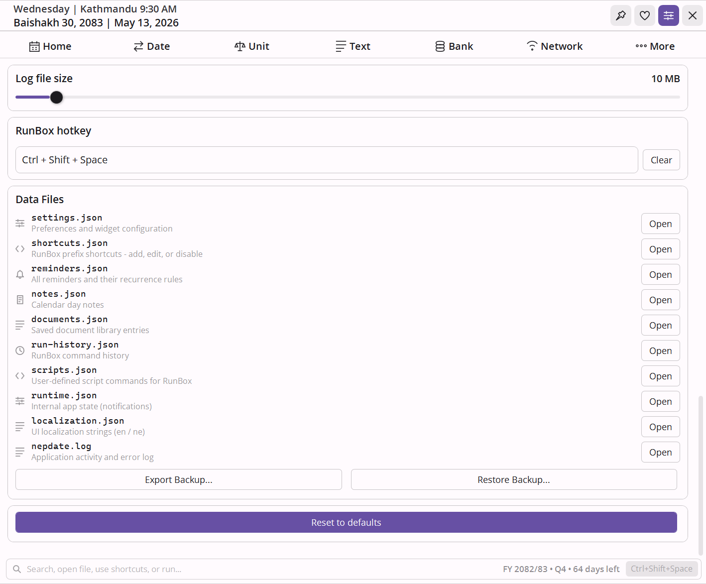

The नेपाली desktop companion that speaks quality.
NepDate Widget sits on your taskbar showing the Bikram Sambat date, time, and timezone. Expand it into a full calendar, date converter, financial calculator, network toolkit, text converter, unit converter, and command launcher - all in one widget, all offline, all in English or नेपाली.


A bar that fits where the clock would.
Two compact lines pinned to your taskbar. Each element toggles independently from settings, so you keep only what matters. Click the bar to expand into the full app.
The widget in use.
Click the mini bar, navigate to any tab, or summon RunBox from anywhere with a single keystroke.

Always one click away
The mini bar sits on your taskbar. Click it to expand into the full widget. Right-click from anywhere to jump directly to any tool.

RunBox in action
Ctrl+Shift+Space → type a command → done. Search the web, calculate, run scripts - without touching the mouse.
One widget. A lot of ground covered.
Built around the Nepali calendar, but it keeps going - document conversion, finance, networking, text tools, traditional units, and a global command launcher.
English and नेपाली - your choice
The entire UI switches between English and Nepali instantly from Settings. Month names, day names, labels, holidays - everything updates on the fly. No restart needed.
- Every string in the app available in both languages
- Calendar shows BS month names in your chosen language
- Localization stored in editable JSON - add your own translations

Preeti ↔ Unicode conversion
Drop a .docx or .txt file, pick the direction, and the entire document converts - headers, footers, and font structure intact. Inline mode works too: type on one side, see the result on the other.
- Supports Preeti, Kantipur, Himalaya, Sagarmatha, and 4 more legacy Nepali fonts
- DOCX conversion preserves formatting - no manual cleanup
- Devanagari ↔ Roman transliteration in the same tab

RunBox - a global command bar
Press Ctrl+Shift+Space from anywhere in Windows. Type
yt nepal to search YouTube, = 500*1.13 to
calculate, map pokhara to open maps, or
scr cleanup to run your own script.
- 22 built-in search prefixes - YouTube, Google, GitHub, DuckDuckGo, Daraz, and more
- History with tab-completion and prefix locking
- Add your own prefixes and scripts in plain JSON
Interest and EMI with BS dates
Simple interest with rate changes across multiple periods, broken down per-row with Bikram Sambat dates. Or enter a loan amount and tenure to get the full EMI schedule - month by month, with reducing balance.
- Multi-period interest: add as many rate-change rows as you need
- EMI amortization table expandable from yearly to monthly detail
- All dates in BS - the format your bank actually uses
Six network tools, one tab
Your public and local IP addresses, ping with RTT stats, LAN subnet scanner with MAC address and manufacturer lookup, traceroute, whois, and DNS - without installing anything extra or needing admin rights.
- Subnet scanner runs 64 parallel pings - finishes a /24 in seconds
- MAC addresses matched against the IEEE OUI database for device identification
- Works offline for local IP enumeration

Bigha, Ropani, Dharni, and metric
Bigha, Kattha, Dhur for Terai land. Ropani, Aana, Paisa, Dam for hill land. Dharni, Pathi, Muri for traditional weight. Plus metric and imperial - all bidirectional, instant.
- Both Terai and Hill measurement systems side by side
- Traditional weight units as per Nepal Weights & Measures Act
- No button click needed - results update as you type
Text tools and password generator
Devanagari ↔ Roman transliteration, word count with six case transformations (camelCase, snake_case, Title Case, and more), and a password generator with Nepali character support and an entropy-based strength meter.
- Cryptographically random password generation
- Word, character, sentence, and line count in one view
- Six text transformations with one-click copy
It's plain text files underneath.
Most users will never need this. But if you want to go further - every setting, every shortcut, every script, every note lives as a plain text file you can open in Notepad. Edit it, save it, done. No menus, no export buttons, no restarts.

Type shop → search Daraz. Type jira → your team board.
Type wiki → your company wiki. Any site. Any keyword.
Stored in shortcuts.json - add a key, a URL with {query}, and
a name. Merges with 22 built-in prefixes. Set "disabled": true to suppress ones you never
use.
Press the hotkey, type scr backup → your backup runs.
scr standup → opens all your morning tabs. From anywhere in Windows, any time.
Defined in scripts.json - name, file path, interpreter (PowerShell,
Python, cmd, WSL). Works with anything your machine can execute. Supports {APPDIR} for
bundled scripts.
Pre-seed your most-used commands so they appear the moment you press the down arrow - on day one, on a new machine. Remove clutter you never want to see again.
Kept in run-history.json - 500 entries, most-recent first. Open it, add or
delete lines, save. Also stores past prefix searches like yt lo-fi beats so they
auto-complete next time.
New computer? Reinstall? Colleagues want your shortcuts setup? One button exports a
dated .zip of everything. One button imports it back - all shortcuts, scripts, notes,
reminders, documents restored instantly.
Settings → Export Backup packs settings.json, shortcuts.json,
scripts.json, notes.json, reminders.json,
documents.json, run-history.json, and localization.json into one
signed ZIP.
Every label in the app - month names, button text, tooltips, error messages - lives in a file you can edit. Add a third language. Fix a translation. Rename a button to suit your workflow.
Stored in localization.json - each key maps to "en" and
"ne" strings. New keys from app updates are merged in automatically; your customizations are
never overwritten.
Have 50 frequently-used documents to register? Don't add them one by one. Build the list in a spreadsheet, convert it to JSON, drop it in - all 50 appear with their tags, notes, and sort order intact.
Stored in documents.json - each entry has title,
tags (array), filePath, notes, and sortOrder. Same
hot-reload as every other file.
The rest of what's in there.
Calendar, date conversion, reminders, notes, documents, timezone converter, holiday countdown, and deep customization - all covered.
BS Calendar & Holidays
Full Bikram Sambat month grid with tithi, festivals, public holidays, fiscal year, and a live countdown to the next holiday.
BS ↔ AD Conversion
Instant bidirectional date conversion. Accepts Nepali digits, month names, and flexible separators. Add/subtract days, find differences.
Timezone Converter
Pick any two system timezones, type a time, and see the conversion. One-click swap button. Handles 12h and 24h input.
Reminders & Notes
One-shot or recurring reminders pinned to BS dates - daily, weekly, monthly, yearly. Quick notes per day, visible as dots on the calendar.
Document Library
Attach and organize local files with tags, notes, and search. PDFs, Word, Excel, images - all metadata stored locally.
20 Themes & 20 Fonts
Dark and light mode with 10 palettes each. 17 bundled fonts plus 3 system fonts. Rounded or sharp corners. No restart needed.
One click to install
Available on the Microsoft Store - per-user, no admin prompt, auto-updates, no telemetry.
%LocalAppData% as readable JSON.
Powered by NepDate
Every BS date, every conversion, every fiscal year calculation in this widget runs on NepDate, the high performance Bikram Sambat library for .NET. Zero allocations, nanosecond conversions, full calendar metadata.
NepDate
Drop-in Bikram Sambat support for any .NET application. Same author. Same quality bar.
Nothing. Free for personal use and source-available under PolyForm Strict 1.0.0. If it saves you time, the Buy me a momo button supports continued development.
Windows 10 and Windows 11 (64-bit, version 1809 or later). The Store version requires a Microsoft account for installation only - the app itself runs with no account.
Almost entirely yes. The calendar, date tools, unit converter, text tools, EMI calculator, RunBox launcher, notes, reminders, and documents all work without internet. The only things that need a connection are My IP, web search prefixes in RunBox (which open your browser), and the Whois/DNS lookups.
Bikram Sambat is Nepal's official calendar system, currently running about 56–57 years ahead of the Gregorian (AD) calendar. Most Nepali government documents, bank statements, and official dates use BS. NepDate Widget shows both calendars side by side and converts between them instantly.
No noticeable impact. It's a lightweight WPF app - the mini bar uses negligible CPU when idle. The only background work is checking for due reminders, which runs on a low-frequency timer.
No. It's a per-user install via the Microsoft Store - no UAC prompt, nothing written to system folders. Everything is handled silently.
Updates are delivered automatically in the background by the Microsoft Store - you don't need to do anything.
NepDate is a .NET library developers embed in their own apps. NepDate Widget is the end-user desktop app - it uses NepDate internally for every BS date calculation.
No. Zero telemetry, no analytics, no account. The only outbound calls happen when you explicitly use a network tool (My IP, ping, scan, whois, DNS) or open a RunBox web search. Everything else stays on your machine.
All data lives in your user profile under %LocalAppData%\NepDateWidget.Store.
Settings, notes, reminders, documents, shortcuts, and run history are all plain JSON files there.
Yes - just copy the AppData folder. Everything is plain JSON, so you can also edit individual files directly, merge data from another machine, or version-control your configuration.
Yes. The global hotkey (Ctrl+Shift+Space by default) summons RunBox from anywhere in Windows - even when the widget is collapsed or the window is not visible. You never need to click the mini bar first.
Yes. Search prefixes live in shortcuts.json and custom scripts in
scripts.json in your AppData folder. Add, edit, or delete entries - changes take
effect immediately, no restart needed. You can import entries from other sources by following the
same JSON structure.
PowerShell, batch files, cmd scripts, Python, and WSL - anything your machine can execute. Point
the entry at the file path and assign a keyword. Use {APPDIR} in paths to reference
scripts bundled with the app itself.
Yes. Switch the entire UI between English and नेपाली instantly from Settings - no restart. All labels, month names, day names, and strings update on the fly. The localization file is a plain JSON you can edit.
Quite a bit. 20 color presets (10 light, 10 dark), 20 font choices, rounded or sharp corners, optional transparency when collapsed, and per-element calendar toggles (tithi, holidays, English day numbers, Saturday/Sunday highlights, and more).
GitHub Issues. Pull requests are welcome too.
Support NepDate Widget
If the widget saves you time every day, consider chipping in a momo. It keeps NepDate and NepDate Widget free, ad-free, and actively maintained.
Buy me a momo